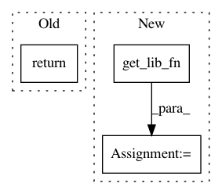

7927c56133dbf7ed60e951a51490a6d17d50f44c,ants/core/ants_transform_io.py,,transform_from_displacement_field,#Any#,206
Before Change
raise ValueError("field must be ANTsImage type")
if field.dimension == 2:
field = field.clone("float")
return tio.ANTsTransform(lib.antsTransformFromDisplacementFieldF2(field.pointer))
elif field.dimension == 3:
field = field.clone("float")
return tio.ANTsTransform(lib.antsrTransformFromDisplacementFieldF3(field.pointer))
After Change
if not isinstance(field, iio.ANTsImage):
raise ValueError("field must be ANTsImage type")
libfn = utils.get_lib_fn("antsTransformFromDisplacementFieldF%i"%field.dimension)
field = field.clone("float")
return tio.ANTsTransform(libfn(field.pointer))
def read_transform(filename, dimension=3, precision="float"):
In pattern: SUPERPATTERN
Frequency: 3
Non-data size: 3
Instances
Project Name: ANTsX/ANTsPy
Commit Name: 7927c56133dbf7ed60e951a51490a6d17d50f44c
Time: 2017-09-24
Author: ncullen.th@dartmouth.edu
File Name: ants/core/ants_transform_io.py
Class Name:
Method Name: transform_from_displacement_field
Project Name: ANTsX/ANTsPy
Commit Name: cb83ab691b8c2558a601a56d2a2de2ec5cf6ad09
Time: 2017-10-05
Author: ncullen.th@dartmouth.edu
File Name: ants/core/ants_transform.py
Class Name: ANTsTransform
Method Name: invert
Project Name: ANTsX/ANTsPy
Commit Name: 7927c56133dbf7ed60e951a51490a6d17d50f44c
Time: 2017-09-24
Author: ncullen.th@dartmouth.edu
File Name: ants/registration/metrics.py
Class Name:
Method Name: image_mutual_information